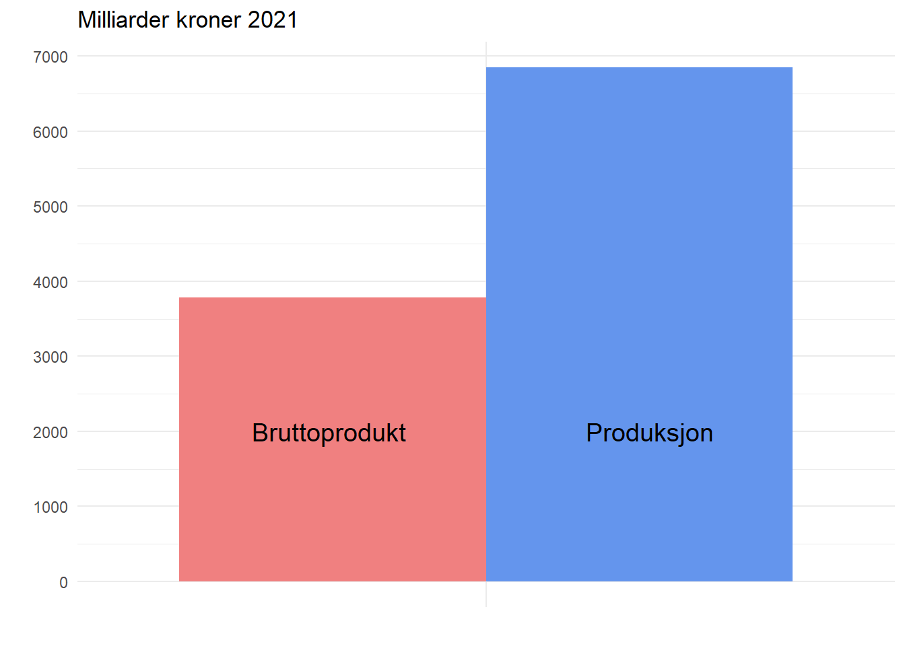
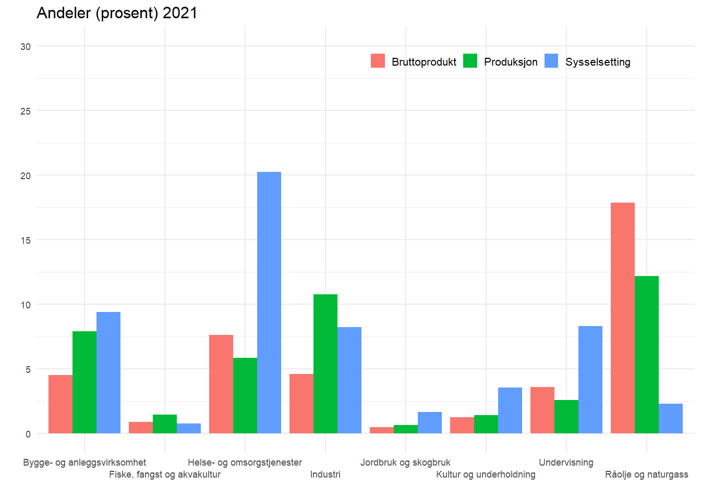
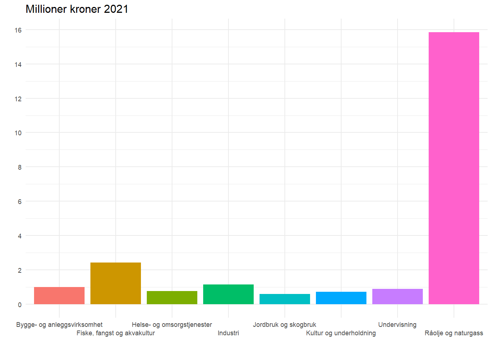
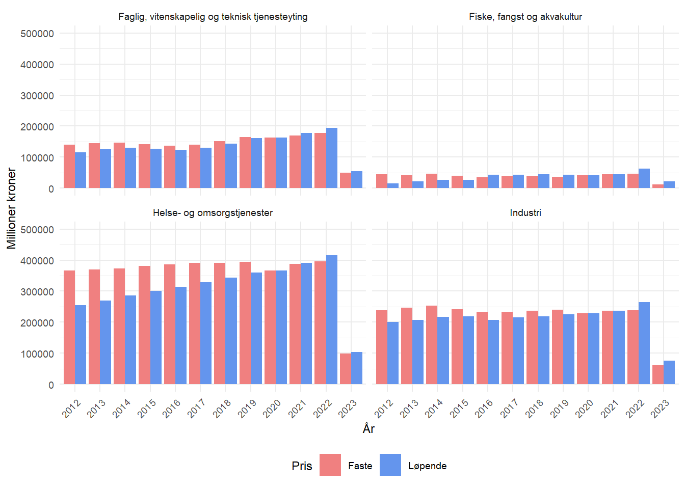
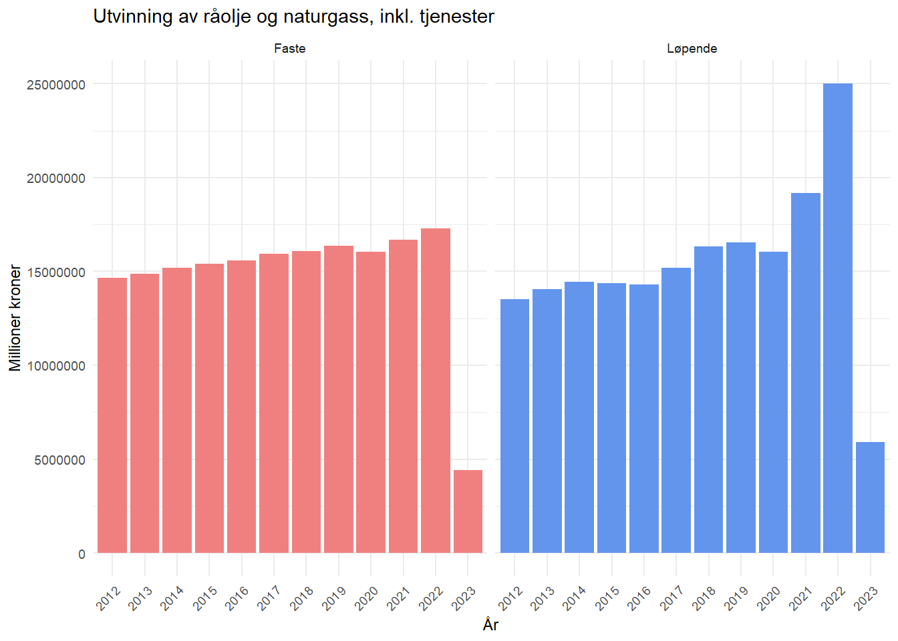

Code
rm(list=ls())
library(tidyverse)
library(rjstat)
library(httr)
library(lubridate)
options(scipen = 999)rm(list=ls())
library(tidyverse)
library(rjstat)
library(httr)
library(lubridate)
options(scipen = 999)# Produksjon og inntekt, etter næring, statistikkvariabel og kvartal
url <- 'https://data.ssb.no/api/v0/no/table/09171/'
query <- '{
"query": [
{
"code": "NACE",
"selection": {
"filter": "item",
"values": [
"nr23_6",
"pub2X01_02",
"pub2X03",
"pub2X05",
"nr2X06_09",
"pub2X06",
"pub2X09",
"nr23ind",
"pub2X10_12",
"nr2310",
"nr2312",
"pub2X13_15",
"nr2315",
"nr2316",
"pub2X18",
"pub2X19_21",
"nr2319",
"pub2X22_23",
"pub2X24",
"pub2X25_28",
"pub2X29_30",
"pub2X31_32",
"pub2X33",
"pub2X35",
"pub2X36_39",
"pub2X41_43",
"pub2X45_47",
"pub2X49B",
"pub2X50A",
"pub2X49A_52",
"pub2X53",
"pub2X55_56",
"pub2X58_63",
"pub2X64_66",
"pub2X68A",
"pub2X68B",
"pub2X69_75",
"pub2X77_82",
"pub2X84",
"pub2X85",
"pub2X86_88",
"pub2X90_97",
"nr24_5",
"nr24_",
"nr24sivil",
"nr2482",
"nr25_",
"nr23_6fn",
"nr23fn",
"nr23mark",
"nrimark"
]
}
},
{
"code": "ContentsCode",
"selection": {
"filter": "item",
"values": [
"Prob",
"BNPB",
"Prob2",
"BNPB2"
]
}
}
],
"response": {
"format": "json-stat2"
}
}'
hent_indeks.tmp1 <- url %>%
POST(body = query, encode = "json")
df <- hent_indeks.tmp1 %>%
content("text") %>%
fromJSONstat() %>%
as_tibble()# sysselsetting i antall årsverk(1000)
url <- 'https://data.ssb.no/api/v0/no/table/09174/'
query <- '{
"query": [
{
"code": "NACE",
"selection": {
"filter": "vs:NRNaeringPubAgg",
"values": [
"nr23_6",
"pub2X01_02",
"pub2X03",
"pub2X05",
"nr2X06_09",
"pub2X06",
"pub2X09",
"nr23ind",
"pub2X10_12",
"nr2310",
"nr2312",
"pub2X13_15",
"nr2315",
"nr2316",
"pub2X18",
"pub2X19_21",
"nr2319",
"pub2X22_23",
"pub2X24",
"pub2X25_28",
"pub2X29_30",
"pub2X31_32",
"pub2X33",
"pub2X35",
"pub2X36_39",
"pub2X41_43",
"pub2X45_47",
"pub2X49B",
"pub2X50A",
"pub2X49A_52",
"pub2X53",
"pub2X55_56",
"pub2X58_63",
"pub2X64_66",
"pub2X68A",
"pub2X68B",
"pub2X69_75",
"pub2X77_82",
"pub2X84",
"pub2X85",
"pub2X86_88",
"pub2X90_97",
"nr24_5",
"nr24_",
"nr24sivil",
"nr2482",
"nr25_",
"nr23_6fn",
"nr23fn",
"nr23mark",
"nrimark"
]
}
},
{
"code": "ContentsCode",
"selection": {
"filter": "item",
"values": [
"SysselsattNorm"
]
}
}
],
"response": {
"format": "json-stat2"
}
}'
hent_indeks.tmp <- url %>%
POST(body = query, encode = "json")
df_syssel <- hent_indeks.tmp %>%
content("text") %>%
fromJSONstat() %>%
as_tibble()Oppgave 1
df2 <- df %>% # lager ett nytt datasett for å jobbe med videre i oppgaven
separate(kvartal,
into=c("year"),
sep="K") %>% # lager en ny variabel som inneholder årstall
mutate(year = (year)) %>% # endrer variabelen til numerisk
rename(var = statistikkvariabel) # endrer navn på variabelen
df2 <- df2 %>%
group_by(year, næring, var) %>% # grupperer etter årstall, næring og variabel
summarise(verdi = sum(value)) # summerer verdiene for hver gruppe
df3<-df2 %>%
pivot_wider(names_from = 'var', values_from='verdi') %>% # pivoter for å få en bred tabell
rename(løpende = 'Produksjon i basisverdi. Løpende priser (mill. kr)',
bruttoprodukt= 'Bruttoprodukt i basisverdi. Løpende priser (mill. kr)') # endrer navn på variabelene
# sette sammen data til en figur
df4 <-df3 %>%
# filter for årstall som skal brukes
filter(year == 2021) %>%
# filter for næringene som skal sees videre på
filter(næring %in% c("Helse- og omsorgstjenester",
"Utvinning av råolje og naturgass, inkl. tjenester",
"Jordbruk og skogbruk", "Undervisning",
"Bygge- og anleggsvirksomhet",
"Fiske, fangst og akvakultur",
"Kultur, underholdning og annen tjenesteyting",
"Industri")) %>%
# Regner ut prosentandelen i de ulike næringene
mutate(brutto_pros=bruttoprodukt/5145241*100,
produ_pros=løpende/8759224*100)
df_syssel <-df_syssel %>%
filter(år == 2021) %>%
filter(næring %in% c("Helse- og omsorgstjenester",
"Utvinning av råolje og naturgass, inkl. tjenester",
"Jordbruk og skogbruk", "Undervisning",
"Bygge- og anleggsvirksomhet",
"Fiske, fangst og akvakultur",
"Kultur, underholdning og annen tjenesteyting",
"Industri")) %>%
#regner ut en ny variabel som gir prosenten til sysselsatte i de ulike næringene
mutate(pros_syssel=value/2518.7*100)
df_bps <-df3 %>%
# filter for årstall som skal brukes
filter(year == 2021) %>%
# filter for næringene som skal sees videre på
filter(næring %in% c("Helse- og omsorgstjenester",
"Utvinning av råolje og naturgass, inkl. tjenester",
"Jordbruk og skogbruk", "Undervisning",
"Bygge- og anleggsvirksomhet",
"Fiske, fangst og akvakultur",
"Kultur, underholdning og annen tjenesteyting",
"Industri"))
# Setter slik at næring går i samme 'order' nedover i radene på begge datasett
df4 <- df4[order(df4$næring), ]
df_syssel <- df_syssel[order(df_syssel$næring), ]
# lager en variabel å jobbe videre med
pros_syssel <- df_syssel$pros_syssel
# setter variabel inn i df4
df4 <- cbind(syssel=pros_syssel, df4)
# legger til antall sysselsatte i df_bps
df_bps <- cbind(df_bps, value = df_syssel[, 4])
# regner ut bruttoprodukt per sysselsatt i løpende priser
df_bps <-df_bps %>%
mutate(value=value*1000,
plott=bruttoprodukt/value)
# setter verdiene som skal plottes sammen i en variabel
df4 <-df4 %>%
pivot_longer(c('syssel','brutto_pros','produ_pros'), names_to = "names", values_to = "plot")I løpet av 2021 produserte norske næringer varer og tjenester til en totalverdi på 6 848 milliarder kroner. Verdiskapingen som kalles bruttoprodukt, er forskjellen mellom produksjon etter at produktinnsats er trukket vekk, og utgjorde 3 782 milliarder kroner. Produktinnsats er produkter og tjenester næringer må kjøpe av andre næringer for å produsere sitt produkt, for eksempel strøm.
Figur 1.1 Total produksjon i basisverdi (løpende priser) og bruttoprodukt i basisverdi (løpende priser) for alle næringer 2021
df2 %>%
filter(year == 2021) %>%
filter(næring == "Totalt for næringer") %>%
filter(var %in% c('Bruttoprodukt i basisverdi. Løpende priser (mill. kr)',
'Produksjon i basisverdi. Løpende priser (mill. kr)')) %>%
ggplot()+
# priser er i millioner kroner så deler på 1000 for å få de i millarder
geom_col(aes(x=næring, y=verdi/1000, fill=var), position="dodge")+
# endrer fargene så det er en rød tråd mellom figurene
scale_fill_manual(values=c('lightcoral', 'cornflowerblue'))+
theme_minimal()+
theme(legend.position="none", # fjerner legende
axis.text.x=element_blank())+ #fjerner tekst fra x-akse
annotate("text", x=0.77, y=2000, label= # gir navn til søyle
"Bruttoprodukt", size=5)+
annotate("text", x=1.24, y=2000, label= # gir navn til søyle
"Produksjon", size=5)+
labs(title="Milliarder kroner 2021",x="",y="")+ # tittel
# fikser så man ser bedre verdiene
scale_y_continuous(breaks = seq(from = 0, to = 7000, by = 1000))
Samlet sysselsatte næringene litt over 2,5 millioner årsverk, hvor to deltidsstillinger på 50 prosent regnes om til ett årsverk. I 2021 var helse og omsorgstjenester den næringen som sysselsatte flest, med hele 20 prosent av den totale sysselsettingen for alle næringer.
Figur 1.2 Sysselsetting, produksjon og bruttoprodukt fordelt på næring, 2021
df4 %>%
ggplot()+
#dodge gjør slik at søylene går ved siden av hverandre
geom_col(aes(x=næring, y=plot, fill=names),position = "dodge")+
theme_minimal(base_size=8.5)+ # Endrer på tekst størrelsen til aksene
theme(legend.position=c(0.70,0.92), # Setter legenden inn i figuren
plot.title=element_text(size=11.5), # endrer størrelsen på teksen
legend.direction="horizontal", # setter legenden fra vertikal til horisontal
legend.text= element_text(size=8), # gjør legendestørrelse litt mindre
legend.key.size = unit(0.4, "cm"))+ # fargeboks litt mindre
scale_x_discrete(guide = guide_axis(n.dodge = 2), # fikser x-aksen
labels=c("Kultur, underholdning og annen tjenesteyting"
="Kultur og underholdning", "Utvinning av råolje og naturgass, inkl. tjenester"="Råolje og naturgass"),
)+ # gir nye navn så de passer bedre i figuren
labs(y="", x="", # fjerner variabel navnene som står som default
title="Andeler (prosent) 2021")+ # setter tittel
# lager en sequence for y-aksen fra 0-30 med step 5
scale_y_continuous(breaks = seq(from = 0, to = 30, by = 5), limits=c(0,30))+
# lager ordentlige navn på søylene
scale_fill_discrete(name = "", labels = c("Bruttoprodukt",
"Produksjon",
"Sysselsetting"))
Industriproduksjonen i Norge var nesten høyere enn oljeutvinningen i 2021, med 941 milliarder kroner mot olje- og gassutvinningens 1 066 milliarder kroner. Imidlertid bruker industrien mye produktinnsats fra andre næringer, slik at bruttoproduktet kun utgjør 236 milliarder kroner, som tilsvarer omtrent 23 prosent av produksjonen.
Råolje og naturgass alene utgjør 18 prosent av bruttoproduktet for alle næringer, og siden oljen er en verdifull naturressurs, utgjør bruttoproduktet for olje- og gassutvinning på 918 milliarder kroner hele 85 prosent av produksjonen.
Figur 1.3 Bruttoprodukt per sysselsatt i løpende priser fordelt på næringer
df_bps %>%
ggplot()+
geom_col(aes(x=næring, y=plott, fill=næring))+
# setter tema og gjør tekst størrelsen til 9
theme_minimal(base_size=8.5)+
#fjerner legenden og setter tittel til tekststørrelse 12
theme(legend.position="none",
plot.title=element_text(size=11.5))+
# fikser x-aksene sine navn og gjør så de ikke overlapper, endrer noen navn
scale_x_discrete(guide = guide_axis(n.dodge = 2),
labels=c("Kultur, underholdning og annen tjenesteyting"
="Kultur og underholdning", "Utvinning av råolje og naturgass, inkl. tjenester"="Råolje og naturgass"),
)+
# gir tittel og fjerner x og y labels
labs(x="",y="",title="Millioner kroner 2021")+
# lager en sequence for y-aksen fra 0-16 med step 2
scale_y_continuous(breaks = seq(from = 0, to = 16, by = 2))
Fordelingen av bruttoprodukt per sysselsatt i hver næring viser at råolje og naturgass alene utgjør en så stor andel av bruttoproduktet at sammenligninger blir utfordrende. I 2021 hadde råolje og naturgass et bruttoprodukt per sysselsatt på hele 15.8 millioner kroner, mens industrien hadde omtrent 1.1 millioner kroner i bruttoprodukt per sysselsatt.
Oppgave 2
Bruttoprodukt per sysselsatt er et mål på produktiviteten i et land. For eksempel mellom næringer, fylker eller sektorer. Når man skal se på bruttoprodukt som et mål på produktivitet i offentlig sektor kan det by på noen utfordringer.
For det første har offentlig sektor en annen form for organisering og produksjon enn privat sektor. Fylker eller kommuner som har olje og gassproduksjon kommer bruttoprodukt per sysselsatt til å være høyere enn andre fylker, se eksempel i figur 1.3. For det andre inkluderes bruttoprodukt vanligvis ikke i offentlig sektors kapitalavkastning, noe som kan undervurdere produktiviteten i offentlig sektor. Spesielt hvis sektoren bruker mye kapital i produksjonen, for eksempel som i helse- og omsorgstjenester.
Selv om bruttoprodukt per sysselsatt kan være et nyttig mål på produktivitet i offentlig sektor, er det nødvendig å bruke flere mål for å få et mer omfattende bilde av produktiviteten i sektoren. Kvalitet og effektivitet er også viktige mål for offentlig sektor, og kan gi et mer komplett bilde av produktiviteten i sektoren. Dermed kan det være et nyttig supplement til andre mål på produktivitet og effektivitet i offentlig sektor.
Oppgave 3
Figur 1.4 Bruttoprodukt per næring i faste og løpende priser fra 2012 til 2022
df_oppg3_wide <- df2 %>% # henter data
pivot_wider(names_from = var, values_from = verdi) %>% # lager en bred tabell
rename(Løpende = 'Bruttoprodukt i basisverdi. Løpende priser (mill. kr)') %>% # gir nye navn til variablene
rename(Faste = 'Bruttoprodukt i basisverdi. Faste 2020-priser (mill. kr)') # gir nye navn til variablene
df_oppg3_wide <- df_oppg3_wide %>% # henter data
filter(year >= 2012) %>% # filtrerer på år
pivot_longer(cols=c(Løpende, Faste), names_to='pris', values_to='verdi') # lager en lang tabell
df_oppg3_wide %>% # henter data
filter(næring %in% c( 'Helse- og omsorgstjenester', 'Industri', 'Fiske, fangst og akvakultur', 'Faglig, vitenskapelig og teknisk tjenesteyting' )) %>% # filtrerer på næring
ggplot(aes(x=year, y=verdi, fill=pris)) + # lager en plot
geom_col(position = 'dodge') + # lager søyler
facet_wrap(~næring)+ # lager en facetwrap, for flere figurer
scale_fill_manual(values=c('lightcoral', 'cornflowerblue')) + # endrer fargene på søylene
labs(x='År', y='Millioner kroner', fill='Pris') + # endrer navnene på aksene
theme_minimal(base_size=9)+ # endrer på tekst størrelsen til aksene
theme(axis.text.x = element_text(angle = 45, hjust = 1), # roterer teksten på x-aksen
legend.position = "bottom")+ # endrer plasseringen til legende
ylim(0,500000) # setter y-aksen
Næringer som er sterkt avhengige av råvarer eller energiprodukter, kan oppleve store svingninger i bruttoproduktet på grunn av variasjoner i produktprisene. Dette skyldes at prisene på råvarer og energi ofte kan være svært uforutsigbar, og påvirkes av faktorer som tilbud og etterspørsel, geopolitiske hendelser, valutakurser og klimatiske forhold.
Eksempler på slike næringer inkluderer olje- og gassindustrien, gruveindustrien, jordbrukssektoren og fiskeindustrien. Variasjoner i produktprisene kan ha en betydelig innvirkning på bruttoproduksjonen i disse sektorene. For eksempel kan et fall i prisen på olje og gass føre til en reduksjon i bruttoproduksjonen i olje- og gassindustrien, mens en økning i prisene på jordbruksprodukter kan føre til en økning i bruttoproduksjonen i jordbrukssektoren.
På den annen side er det også næringer som ikke nødvendigvis er så følsomme for endringer i produktprisene. For eksempel kan tjenestenæringer som helsevesen, utdanning og teknologisektoren i mindre grad påvirkes av slike variasjoner. Dette skyldes at disse sektorene er mindre avhengige av råvarer og energi, og i større grad er avhengige av andre faktorer som teknologiutvikling, innovasjon, og kvaliteten på tjenestene som tilbys.
Figur 1.5 Utvinning av råolje og naturgass inkl. tjenester i faste og løpende priser
df_oppg3_wide %>% # henter data
filter(year >= 2012) %>% # filtrerer på år
filter(næring == 'Utvinning av råolje og naturgass, inkl. tjenester') %>% # filtrerer på næring
ggplot(aes(x=year, fill = pris)) + # lager en plot
geom_col(data = filter(df_oppg3_wide, pris == "Løpende"), aes(y = verdi)) + # lager søyler
geom_col(data = filter(df_oppg3_wide, pris == "Faste"), aes(y = verdi)) + # lager søyler
facet_wrap(~pris)+ # lager en facet
scale_fill_manual(values=c('lightcoral', 'cornflowerblue')) + # endrer fargene på søylene
labs(x='År', y='Millioner kroner', fill='pris', title = 'Utvinning av råolje og naturgass, inkl. tjenester') + # endrer navnene på aksene
theme_minimal(base_size=9)+ # endrer på tekst størrelsen til aksene
theme(axis.text.x = element_text(angle = 45, hjust = 1), # roterer teksten på x-aksen
legend.position = "none") # fjerner legende
Oppgave 4
Olje og gass trekkes fra fordi det er en inntektskilde som varierer veldig på grunn av markedet. Det er derfor lettere å lete etter sammenhenger i økonomien uten denne næringen, det er også lettere å sammenlikne målingene internasjonalt. Det er først og fremst produktivitetsveksten i fastlandsøkonomien som bestemmer velstanden i Norge. En stor del av produksjonverdien kan også være grunnrente.
Det er lagt vekt på makedsrettede fastlandsnæringer fordi produksjonen i offentlig sektor og boligtjenster ikke omsettes i markeder, det gjør at produksjonstallene stort sett er basert på kostnader.